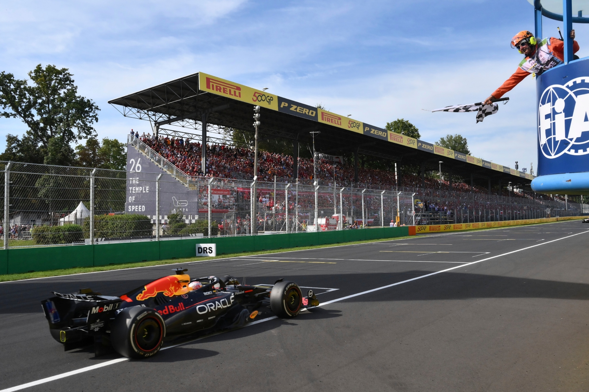

F1 Hace 2 horasVerstappen amplía su ventaja con una victoria quirúrgica bajo los reflectores
El piloto neerlandés impuso un ritmo implacable desde la pole position, gestionando la degradación de neumáticos y asegurando puntos clave para el campeonato de constructores.